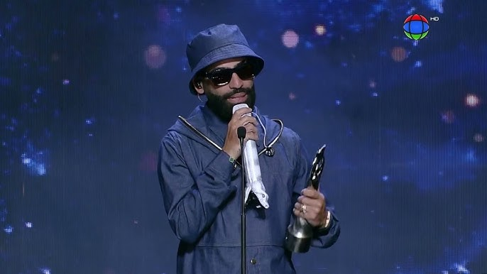
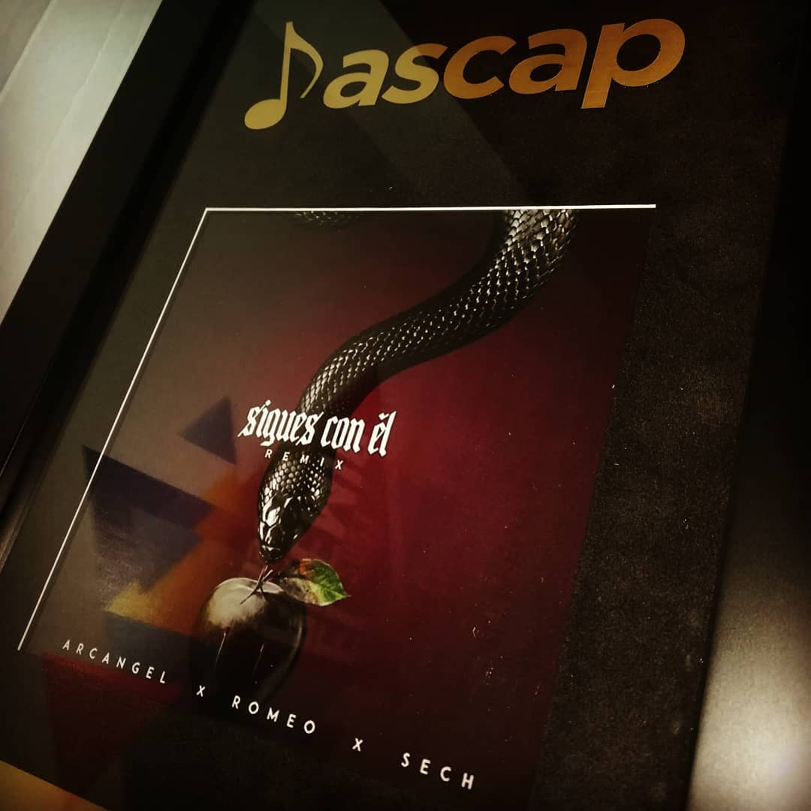

PREMIOS
-
Ganador del premio ASCAP por mejor Remix - Canción ZUM ZUM Remix (2019)
-

Ganador del Premio a la Trayectoria - Premios Tu Música Urbano (2020)
-

Ganador del premio ASCAP por mejor Remix - Canción Sigues con él Remix (2019)
-
Ganador del premio a la mejor trayectoria - Premios Heat Latin Music (2021)
-
Ganador del premio a la mejor colaboración por la canción "La Jumpa" con Bad Bunny - Premios Heat Latin Music (2023)
-
Ganador del premio por el mejor video musical del año - Premios Tu Música Urbano (2023)